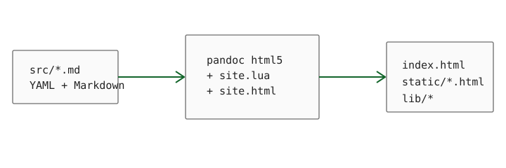

Text and inline markup
This paragraph contains emphasis, strong emphasis, deleted text, inline_code(), H2O, and 210. A normal link to Pandoc sits beside an internal table link. Escaped punctuation such as *asterisks* stays literal.
Inline mathematics uses the familiar dollar syntax: e^{i\pi}+1=0. Symbols, fractions, and operators work as expected: \alpha + \beta = \frac{1}{2}.
A block quote should remain visually quiet. Long quotations wrap to the same readable measure as the body text and use only a thin rule as emphasis.
Lists
Unordered lists can be nested:
- source documents
- metadata
- prose
- rendering
- semantic HTML
- local assets
Ordered lists preserve sequence:
- edit Markdown;
- run
make; - serve the directory with any static HTTP server.
Task lists are useful for release notes:
Lower-level heading
A third-level heading verifies hierarchy, automatic identifiers, and the generated table of contents.
This fenced Div is a Pandoc extension. The HTML remains a normal <div class="note">, styled by the single site template.
- Term
- A definition-list term.
- Definition
- A block attached to the preceding term, useful for manuals and glossaries.
Display mathematics
A display equation is emitted as a KaTeX placeholder by the Lua filter and rendered from the local lib/katex/ module:
\hat{\theta} = \operatorname*{arg\,min}_{\theta} \sum_{i=1}^{n}\left(y_i-f_\theta(x_i)\right)^2.
A second example exercises matrices and alignment-like structures:
A = \begin{bmatrix} 1 & 2 \\ 3 & 4 \end{bmatrix}, \qquad \det(A) = -2.
Code blocks
Fenced code blocks carry their language to Pandoc’s built-in syntax highlighter.
#include <stdio.h>
int main(void) {
puts("static, small, inspectable");
return 0;
}from pathlib import Path
pages = sorted(Path("src").glob("*.md"))
for page in pages:
print(page.stem)Tables
| Component | Generated form | Client JavaScript |
|---|---|---|
| headings | semantic h2–h6 |
no |
| code | highlighted pre > code |
no |
| inline math | KaTeX placeholder | yes |
| display math | KaTeX placeholder | yes |
| tag filter | static cards + arui state | yes |
Figure

Notes, rules, and raw HTML
Footnotes remain useful in longer technical documents.1 The page also supports horizontal rules and conservative raw HTML when Markdown has no equivalent.
Raw HTML details element
Pandoc passes this block through. Use raw HTML sparingly so the Markdown remains portable.
The generated files are ordinary HTML, CSS, fonts, and JavaScript; there is no runtime application server.↩︎